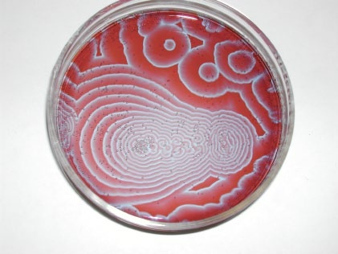
Patterns without a plan.
How local interactions create a larger order.
How do local choices, growth rules, and spatial relationships shape a larger whole?
Architecture can begin with a process as well as a finished shape. Change how parts move, grow, or divide space, and different organisations become possible.
Read the research. Explore three models. Decide what the results might mean for architecture.
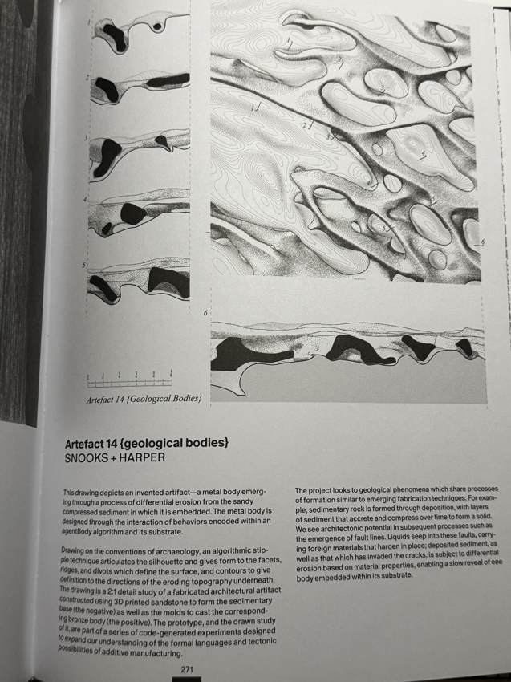
We often describe architecture through finished objects: a wall, a room, a building. But we can also understand form through the processes that produce it.
Growth, repetition, movement, and physical forces can shape an outcome over time.
What process could produce this form?
Research thread: form as process
Project interpretation alongside Snooks et al. (2024, 271).
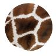
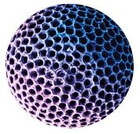
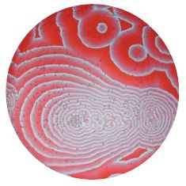
Philip Ball explains how natural patterns can arise through simple, local interactions among many components. The larger organisation can develop without a complete plan directing every part. (Ball 2012)
This introduces self-organisation: larger-scale order developing through interactions within a system.
Ball discusses cellular automata, where simple rules determine how cells respond to their neighbours, yet repeated updates can produce complex patterns. (Ball 2012, 26) This shifts attention from the finished pattern to the interactions that produce it. In our Neighbourhood experiment, we explore this idea by changing a local preference and observing how repeated moves reshape the overall arrangement.
How might a small change in those interactions change the overall pattern?
Source: Ball (2012), Architectural Design 82 (2), 22–27. Full reference (Ball 2012) ↓
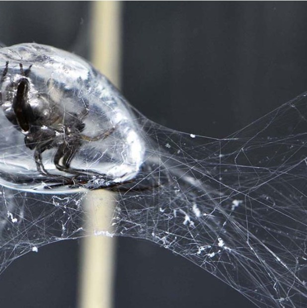
In generative design, the designer defines a process that produces possible outcomes. Rules might specify where elements appear, how they connect, or how they respond to neighbours.
Generative design describes a way of producing form. Emergence describes how larger patterns arise through interactions.
Generating variations alone does not demonstrate emergence.
Project synthesis of Ball (2012) and Gago (2016).
Define the vocabulary
Organise the growth
Relate to the surroundings
A design can resemble a leaf, shell, or cellular structure. Another approach investigates the organisational processes behind those forms.
Gago describes growth through origin, expansion, and connection: where growth begins, how it extends, and how parts relate to their surroundings.
Gago’s geometric design tool uses shape grammars and Voronoi diagrams to translate biological organisation into architectural configurations. (Gago 2016)
Source: Gago (2016), Periodica Polytechnica Architecture 47 (1), 8–13. Full reference (Gago 2016) ↓
The reading guide summarises Gago’s three growth principles.
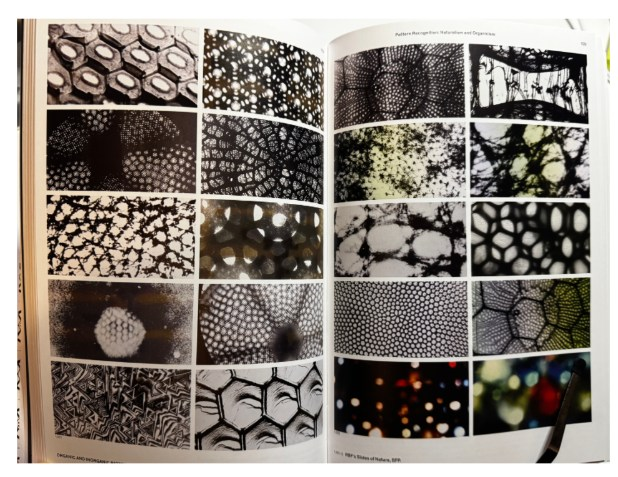
This reference spread brings together cellular patterns and networks. Comparing them directs attention to relationships: how elements connect, divide space, and form a larger whole.
For our investigation, we can ask how a shared geometric rule relates individual parts to a larger whole—and what kinds of variation that rule permits.
Visual reading of the supplied research spread; full publication and figure credits remain to be confirmed.
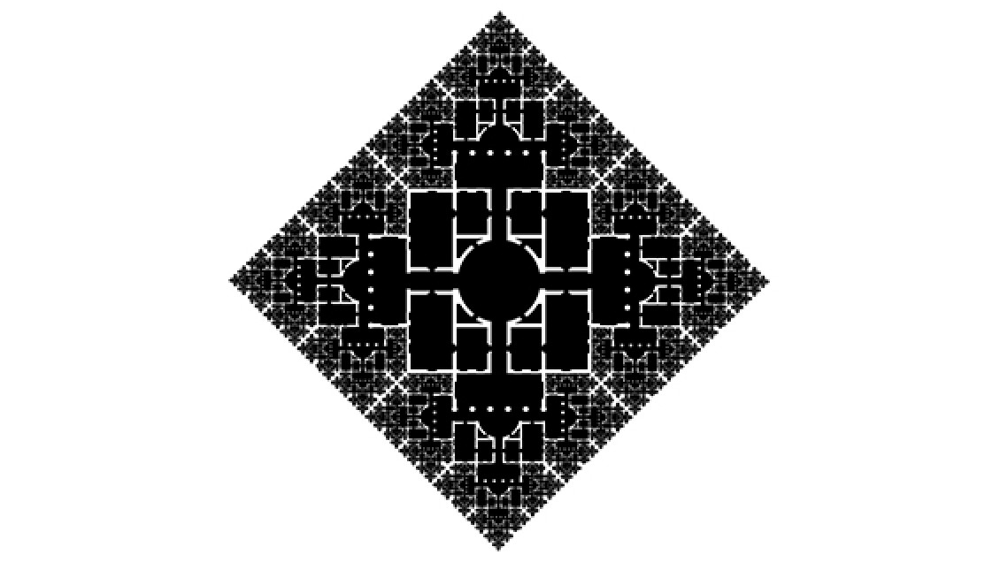
In Drawing Codes, Outpost Office’s Another Villa transforms the plan of Palladio’s Villa Rotonda through repeated elements at progressively smaller scales. A familiar building becomes a new pattern through a consistent drawing procedure.
The drawing connects an instruction to its visible effect: repeat an element, reduce its size, and apply the operation again. Look for what stays recognisable and what changes as repetition transforms the whole.
Our experiments ask the same question: how do a few explicit rules generate an arrangement that we can examine and change?
Sources: The Cooper Union, “Inside Drawing Codes” (2019) ↗; CCA, interview with curators Andrew Kudless and Adam Marcus ↗.
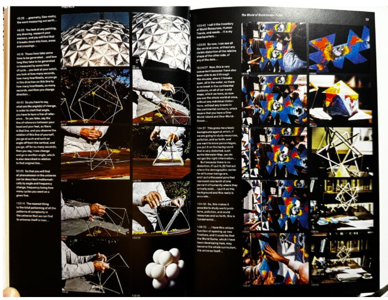
A generated pattern still needs interpretation. Programme, experience, context, and judgement matter when interpreting it as architecture.
A visually complex result does not automatically create a useful space, an efficient structure, or a meaningful architectural experience.
The rules generate possibilities. Designers decide what those possibilities are worth.
Three ways to generate a pattern. Three different questions.
These models explore movement, growth, and spatial partitioning. They share an interest in rules, but they do not all demonstrate emergence in the same way.
How can individual preferences reshape a shared field?
Watch how repeated local decisions produce clusters, mixed areas, or continued movement. Compare the starting layout with the arrangement that develops: each move changes who is next to whom. In architecture, this offers a way to explore how adjacency preferences can influence the organisation of a shared field, without drawing its final layout in advance. Lower settings usually allow more mixing. Higher settings can produce stronger clusters or continued movement.
Local rules. Ball describes grid-based models whose elements respond to the states of neighbouring cells. Simple interactions can generate complex patterns. (Ball 2012, 26)
Emergent order. A larger pattern can arise through interactions among parts, without a blueprint directing the whole arrangement. (Ball 2012, 23)
In this experiment. Each shape checks the proportion of matching occupied neighbours. If it falls below the chosen preference, the shape moves to a random empty cell. Repeating this rule lets us observe how individual moves reshape the overall pattern.
Read the source ↓What stays recognisable when one rule is repeated?
Change one slider at a time to see how the same branching rule creates different forms. Small angles keep branches close together; wider angles spread them out, and very large angles turn them back into overlapping patterns. Child scale controls length: at 50%, each new branch is half as long as its parent; at 100%, it stays the same length; above 100%, it becomes longer. Generations adds branching levels: one gives a single line, two adds two branches, and each further level doubles the new branches. More levels can turn a sparse structure into a dense network. Look for symmetry, gaps, overlaps, and repeated shapes within the whole.
What is a shape grammar? Gago describes a process that transforms shapes step by step using geometric and algebraic rules. New elements are generated from existing ones, allowing the designer to control expansion, proportions, and the character of the form. (Gago 2016, 12)
How does this experiment connect? Here, the starting shape is one line and the rule is to add two branches at each tip. Branch angle sets their direction, child scale sets their length relative to the parent, and generations sets how many levels are drawn. This simple branching rule illustrates the idea of generating form through repeated geometric operations.
Why can one rule create many forms? Gago argues that shape grammars can generate varied forms while retaining a shared geometric identity. Try changing the sliders: the outline changes, but the repeated two-branch relationship remains recognisable. (Gago 2016, 13; applied here to the branching experiment.)
Read the source ↓How does the position of a few points divide a whole field?
Every location is assigned to its nearest seed using straight-line distance. A boundary lies where two seeds are equally close. Add seeds to divide the same field into more cells. Increase clustering to bring seeds closer to the centre: central cells may shrink while outer cells stretch towards the field’s edges. Reduce horizontal spread to squeeze the seeds into a vertical band and watch how the cells stretch sideways. Follow a seed and its colored cell: its boundary changes when it or neighbouring seeds move, even though the nearest-seed rule stays the same. “New seed layout” rearranges the points using your current settings. In architecture, this offers a way to explore spatial subdivision or areas served by the nearest centre. These cells use straight-line distance; rooms, plots, and walkable catchments also depend on access, routes, and other design constraints.
Why Voronoi diagrams? Gago uses Voronoi diagrams to explore geometric characteristics associated with biological growth, including repeated elements and their connections. He combines them with shape grammars to organise the resulting forms. (Gago 2016, 10–12)
How does this experiment connect? Here, we isolate the nearest-seed rule: you position the seeds through the sliders, and the boundaries are calculated from their relationships. Moving one point can change several neighbouring cells. You control the starting conditions rather than draw each boundary.
From territories to a structure. In Gago’s design process, Voronoi geometry enters the stage that defines structural shapes, following earlier rules for organisation and contours. This experiment helps you explore that spatial subdivision; the diagram itself is not a structural design. (Gago 2016, 12)
Read the source ↓The important difference is how a pattern is produced.
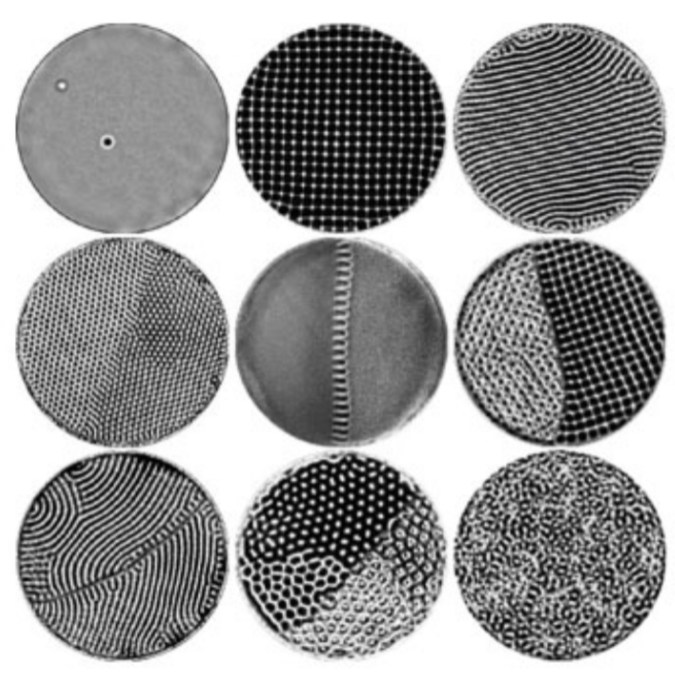
Small changes between neighbouring elements can accumulate into larger patterns. As each element responds to nearby conditions, it can change the conditions for others. An overall order can emerge without every part being planned in advance.
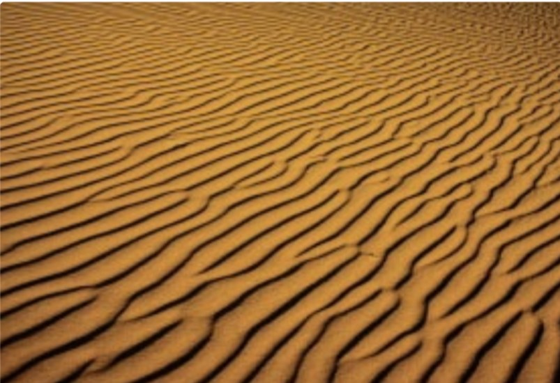
Repetition does not require identical copies. A pattern can retain its identity while its individual parts vary. Changes in scale, direction, and spacing can create variety within a shared order.
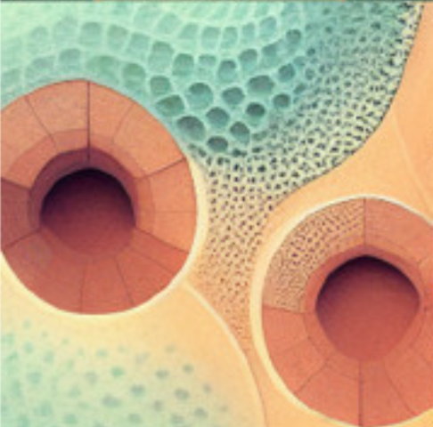
Spatial organisation can be shaped by relationships such as proximity, distance, and adjacency. Changing one element can alter the boundaries around others and reshape the overall arrangement. A pattern’s appearance does not necessarily reveal the rules that produced it.
Our experiments make a few relationships visible by simplifying everything else. Neighbourhood models matching preferences and movement, but not the social and economic conditions of real communities. Growth repeats a branching rule, but does not calculate loads or material behaviour. Territory measures straight-line distance, but does not account for walls, routes, or accessibility.
These models help us ask questions and compare patterns. To use their results in architecture, we must decide what the elements represent, which conditions are missing, and what evidence would be needed to judge a proposal.
Generative design shifts some decisions into rules, parameters, and starting conditions. Emergence describes larger patterns that arise through interactions. The two ideas overlap, but they are not interchangeable.
For architecture, the next step is to connect generated relationships to purpose: access, occupation, material, structure, and experience.
What can our three models reveal—and what needs more evidence? Connect each word to a destination. Each new path finds room around words and earlier connections. Try a different order to change the drawing.
Start with any word. The paths will record the connections you make.
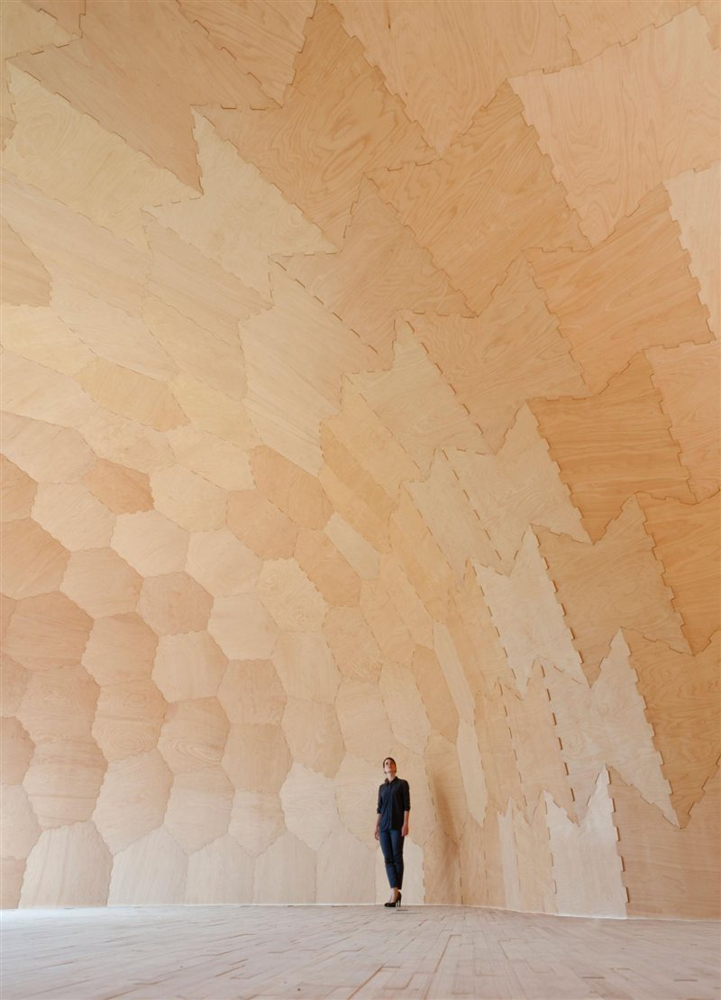
Generating a pattern is a starting point. To develop it into architecture, we need to decide what its lines, cells, and connections represent—and test how they work as spaces, materials, and structures. Physical models can help us explore these possibilities.
What could this pattern become, and what would we need to test?
References use Chicago author–date style. Each entry identifies how the material is used: as an original work or first-hand account, as scholarly interpretation, or as a supporting reference.
Nine distinct research sources are identified here: Ball; López-Pérez; Gago; Çelik; the Drawing Codes curator interview; Artefact 14; Another Villa; and the two University of Stuttgart projects. This set includes more than three primary sources and two scholarly secondary sources. Reproductions, image-credit entries, and website inspirations are not counted again.
Listing sources does not replace close reading. The webpage must still make clear which passages and rules support its argument. Missing image details are recorded below; n.d. means the creation or publication date has not been established.
A synthesis of natural pattern formation, used to interpret local interactions and self-organisation.
Ball, Philip. 2012. “Pattern Formation in Nature: Physical Constraints and Self-Organising Characteristics.” Architectural Design 82 (2): 22–27. https://doi.org/10.1002/ad.1375.
Used for natural pattern formation, self-organisation, and local interactions; images on pages 24, 26, and 27. Ball provides the conceptual connection, not the specific movement algorithm in Neighbourhood.
The researcher’s own method and generated images. Figure 10 is direct evidence of the study’s design exploration.
Çelik, Tuğçe. 2023. “Architectural Design Method Suggestion with Machine Learning Technologies Based on Voronoi Diagram Principle.” Periodica Polytechnica Architecture 54 (1): 12–28. https://doi.org/10.3311/PPar.21643.
Figure 10 supplies the cropped Midjourney-generated image in Reflection. The image illustrates a Voronoi-inspired design exploration; it does not validate the geometry of our Territory model.
Reporting and image reproduction from the exhibition host; not counted as scholarly secondary research.
Cooper Union. 2019. “Inside ‘Drawing Codes.’” January 30, 2019. https://cooper.edu/architecture/news/inside-drawing-codes.
Source of Outpost Office’s Another Villa image and the explanation of its repeated, progressively smaller plan elements.
The researcher’s own account of a geometric design method. Used as direct evidence of that method, rather than counted as a second secondary source.
Gago, Ricardo Massena. 2016. “Architectural Design through the Geometrical Principles of Biological Growth.” Periodica Polytechnica Architecture 47 (1): 8–13. https://doi.org/10.3311/PPar.9891.
Used for origin, expansion, and connection (10), and for the discussion of shape grammars and generated configurations (12–13). Growth and Territory are simplified demonstrations, not reproductions of the complete method.
A publication containing original drawings and interpretive essays. Count individual works according to their use; do not count the book and the same reproduced drawing twice.
Kudless, Andrew, and Adam Marcus. 2024. Drawing Codes: Experimental Protocols of Architectural Representation. Applied Research and Design Publishing. Publication details.
Source of the supplied photograph of Artefact 14 (Geological Bodies), page 271. The 2024 book is distinct from the 2019 Volume II exhibition.
A historical and theoretical study of Fuller’s work. The book is a secondary interpretation; archival material reproduced inside it has its own primary-source status and credits.
López-Pérez, Daniel. 2020. R. Buckminster Fuller: Pattern-Thinking. Lars Müller Publishers. Publisher’s catalogue.
Book identified in the team’s research. The original edition was published in 2020; the current catalogue lists a 2024 printing. The supplied spreads’ edition and individual image credits still need checking against the physical book.
The curators explain their own brief and procedure. Their interview is first-hand testimony about Drawing Codes.
SCAFFOLD, California College of the Arts. n.d. “Andrew Kudless and Adam Marcus Want You to Draw: An Interview about Drawing Codes Volume II.” Accessed November 12, 2026. https://scaffold.architecture.cca.edu/stories_drawingcodesinterivew3/.
Additional context for the exhibition’s rules and drawing procedures.
An original work by its designers, reproduced in Drawing Codes. Its appearance in the anthology is not counted as a separate work.
Snooks, Roland, Laura Harper, Marc Gibson, and Divi Panicker. 2024. Artefact 14 (Geological Bodies). Architectural drawing. In Drawing Codes: Experimental Protocols of Architectural Representation, by Andrew Kudless and Adam Marcus, 271. Applied Research and Design Publishing. Monash University research record.
The publication labels the work “Snooks + Harper”; the university record lists all four contributors.
The design institute’s own documentation of its built project.
University of Stuttgart, Institute for Computational Design and Construction. n.d. “Landesgartenschau Exhibition Hall.” Accessed November 12, 2026. https://www.icd.uni-stuttgart.de/projects/landesgartenschau-exhibition-hall/.
Project reference for the built timber hall shown in “From patterns to places.”
The project team’s account of its biological precedent and fabrication process.
University of Stuttgart, Institute of Building Structures and Structural Design. n.d. “ICD/ITKE Research Pavilion 2014–15.” Accessed November 12, 2026. Project page.
Source for the water-spider image and the connection between its construction process and the pavilion’s fabrication method. The individual photographer of the spider image is not identified in the available credit.
References that informed the interactive demonstrations. The research entries above provide the theoretical context.
Hart, Vi, and Nicky Case. 2014. Parable of the Polygons: A Playable Post on the Shape of Society. https://ncase.me/polygons/.
Reference for learning through interaction and the neighbouring-shapes demonstration. Our implementation uses its own controls and simplified movement rules.
Square brackets indicate descriptive titles supplied for this webpage. Crops and reproductions retain their original creators’ credits.
Çelik, Tuğçe. 2023. [Voronoi-inspired design exploration generated with Midjourney]. Figure 10 in “Architectural Design Method Suggestion with Machine Learning Technologies Based on Voronoi Diagram Principle,” 12–28. Full article reference ↑.
Cropped for Reflection. This is a generated design image, not a photograph of a built project.
[Diving bell water spider and silk-reinforced air bubble]. n.d. Reproduced on the University of Stuttgart’s “ICD/ITKE Research Pavilion 2014–15” project page. Source ↑.
Individual photographer and image date unverified. The pavilion date does not establish the photograph date; the page’s other photography credits cannot safely be assigned to this specific image.
These images are reproduced from Ball (2012). Original creation dates are not supplied in the available credits; 2012 is the date of the consulted publication, not an assumed photograph date.
A first-hand visual record of the building. Listed for attribution, not counted as an additional research argument.
Halbe, Roland. n.d. [Interior photograph of the Landesgartenschau Exhibition Hall, Schwäbisch Gmünd]. In “Landesgartenschau 2014.” Divisare. Accessed November 12, 2026. Image source.
Photograph © Roland Halbe. The hall was completed in 2014; a separate date for the selected photograph has not been established.
An original drawing by Outpost Office, viewed through the Cooper Union’s reproduction.
Outpost Office (Ashley Bigham and Erik Herrmann). n.d. Another Villa. Architectural drawing. Reproduced in Cooper Union, “Inside ‘Drawing Codes,’” January 30, 2019. Image source.
“The World of Buckminster Fuller,” pages 22–23: used in the introduction and “Geometry is only part of architecture.” The team associates this spread with López-Pérez’s Pattern-Thinking; confirm the edition and original photograph/film credits.
“Pattern Recognition: Natural and Organic”: used in “Geometry can organise relationships.” The supplied photograph does not establish the full publication details or individual image credits. Its attribution remains provisional.
These are records of the material used, not completed bibliographic citations.
The interactive Neighbourhood, Growth, and Territory graphics, the origin–expansion–connection reading guide, and the reflection connection activity were created for this project with AI assistance. They are explanatory models, not reproduced research figures or measured architectural findings. The Midjourney image is credited to its published source, Çelik (2023, fig. 10).
A separate group process log should record the main AI prompts, outputs, and at least three corrections, rejections, or rewrites. This credit statement does not replace that log.